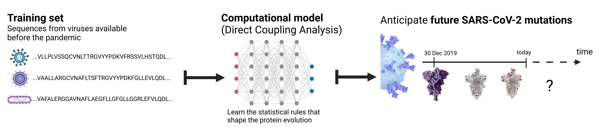

projects
T cell - epitope interactions
T cells play a critical role in defending the body against viruses, bacteria, and even cancer. Here is a video of a T cell targeting and killing a cancer cell:

T cells detect small molecular fragments—called epitopes—displayed on the surface of infected or cancerous cells, triggering an immune response to eliminate them. Understanding which T cells recognize which epitopes is essential for developing effective immunotherapies, yet it remains a major computational and experimental challenge. To address this, I developed MixTCRpred, a state-of-the-art deep learning model to predict TCR-epitope interactions. Accurate predictions like these can accelerate the development of therapies that aim to identify or engineer T cells capable of targeting cancer epitopes. Have a look at the paper and at the code on Github.
Modeling protein evolution
Over time, genetic mutations accumulate in the DNA sequences that code for proteins. These mutations can alter amino acid sequences and affect a protein’s structure and function. Can we model protein evolution—that is, anticipate which amino acid mutations are likely to arise in the future?

SARS-CoV-2
Since the start of the COVID-19 pandemic, mutations in SARS-CoV-2 proteins have led to more infectious and immune-evasive variants. We trained a statistical model on pre-pandemic protein sequence data to predict which sites in SARS-CoV-2 are prone to mutation. Retrospective analysis showed the model could anticipate many of the mutations observed since the original Wuhan-Hu-1 strain, with accuracy improving as more data became available. Have a look at the paper, or check out the media coverage on RFI (in english) and France Culture (in french).
Escherichia coli
The idea of using evolutionary sequence data to predict protein evolution extends beyond SARS-CoV-2. In another project, we analyzed the proteomes of 60,000 recently diverged Escherichia coli strains to develop a broader theoretical framework. See the introductory article on Nature Portfolio for an overview.